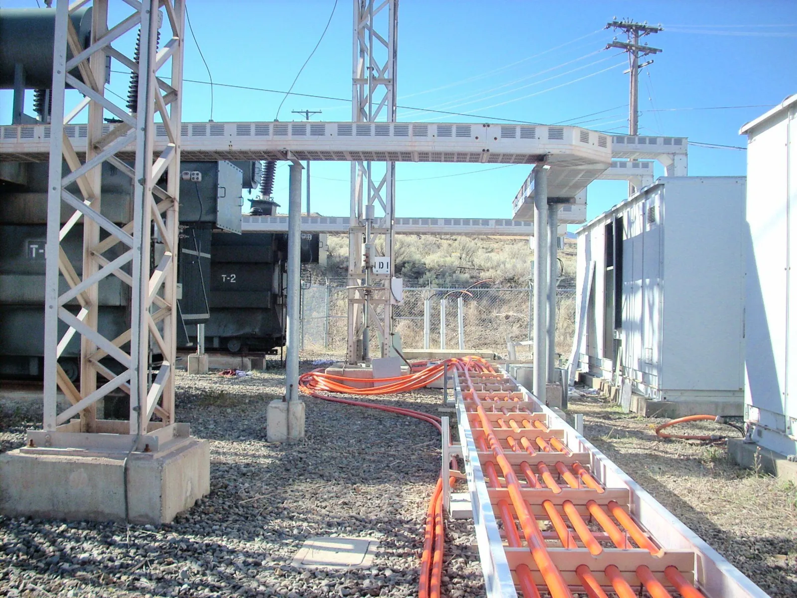

Código abierto
Puedes revisar cómo calcula cada número
El código, las tablas de la norma y los casos de prueba son públicos. Nadie tiene que creerle al programa: se puede comprobar.
Código y tablas públicos
El código, las tablas de la norma en CSV y los casos de prueba están en GitHub. Cada regla cita su cláusula.
Compilado a la vista
El instalador y la versión en línea se compilan en GitHub Actions desde el código público. Nadie los sube a mano.
Tus proyectos son tuyos
El programa no envía información a ningún lado. Este sitio no usa cookies ni rastreadores.
Gratis, sin cuentas
Licencias MIT o Apache-2.0. Úsalo en los proyectos de tu trabajo sin registrarte ni pagar.
Verificación
Cómo se comprueba cada cálculo
Tres tipos de prueba por regla
Cada regla de cálculo tiene una prueba matemática (la fórmula da lo que debe), una de referencia (un caso resuelto a mano) y una normativa (aplica la tabla y el artículo correctos). Se ejecutan en cada cambio, en Windows y en Linux.
Casos revisables en una hoja de cálculo
Los casos de referencia están en archivos CSV que un ingeniero puede abrir en Excel, revisar contra su propio cálculo y firmar como revisados.
Tablas cotejadas
Las tablas de la NOM-001-SEDE-2012 se validan por consistencia interna y se cotejaron contra una captura independiente. El repositorio no contiene el texto de la norma.
Nunca supone un dato
Si una tabla no cubre un caso, el programa lo dice y lo marca como no evaluado en lugar de usar un valor aproximado.
Política de firma de código
Free code signing provided by SignPath.io, certificate by SignPath Foundation.
Solicitud en trámite. Mientras tanto el instalador se publica sin firma y Windows puede mostrar «Windows protegió su PC». La versión en línea no lo necesita.
- Los instaladores se compilan en GitHub Actions desde el código público del repositorio; ningún binario se compila ni se sube a mano.
- Autor y responsable de aprobar cada versión firmada: Juan Antonio Aguilar Martínez.
- Privacidad: el programa no transfiere información a otros sistemas en red, salvo que el usuario lo pida expresamente.
Créditos
Imágenes de este sitio
Las capturas son de IEEStudio y las hojas, de la memoria que genera. Las fotografías son de dominio público:
| Fotografía | Autor | Licencia | |
|---|---|---|---|
| Tablero de distribución con electricista | CANEurope, vía Flickr | CC0 1.0 (dominio público) | Original |
| Tablillas de conexión | rawpixel | CC0 1.0 (dominio público) | Original |
| Interruptores termomagnéticos | rawpixel | CC0 1.0 (dominio público) | Original |
| Subestación eléctrica | rawpixel | CC0 1.0 (dominio público) | Original |
| Tubería conduit EMT | Darryl, vía WordPress Photo Directory | CC0 1.0 (dominio público) | Original |
| Charola con cable 350 MCM | Darryl, vía WordPress Photo Directory | CC0 1.0 (dominio público) | Original |
Tipografía IBM Plex, licencia SIL Open Font License. Íconos y personaje del video, propios del proyecto.
¿Quieres contribuir?
Reporta errores, propone mejoras o revisa los casos de prueba. Todo pasa en GitHub.